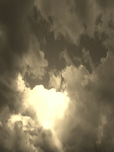
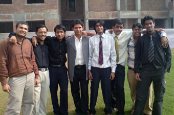
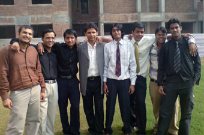

kem cho! добре-дошъл! أهلا وسهلا!
aur bhaijaan, kaise ho! Шчыра-запрашаем!
bienvenue! whats up! herzlich-willkommen!
ahlan-wa-sahlan!kya haal chal!
yôkoso! bienvenido-bienvenida!
velkommen!
Disclaimer:
This site is NOT meant for educational purposes. Knowledge crazy people stay advised, it's all plain old bs around here by some narsicistic, self-absorbed idiot.
germination
How this thing came into being.
The story of cigarettes, beer and dedication!

This is Rishabh Gupta 's page and as has been wisely said "Empty mind, devils workshop", well he (as in me.. talking in third person here) kind of has had an empty mind for a while with just enough devil on the plate plus it's been a while since he had one of those "creative outbursts" so this contribution to the mankind was long overdue. No, No, not at all, you don't have to thank him for this (pun intended, you can thank me though), he owed every individual on this planet this much, so sitback, relax and enjoy the website and beware no ones gonna be returning back here coz everything in here is full bakwas. FYI is website me maine/usne kuch bhi kahin se bhi copy nahi kiya other than wiki which has been mentioned, so we better not be getting any copyright infringement claims.. jk.. some pic previews are from the web, maybe some other stuff too (if you are offended, lemme know.. we'll take it off)! I am probably gonna be adding some actual stuff other than all this bs sometime soon, dont take my word for it though cause I am pretty sure as soon as this site is done I will burrow back into 'procrastinatious' little hole, but incase devil pesters me again I am gonna try to make and upload a couple videos for android users and for mac users, with some tips and tricks you might not have heard before, well atleast some of it for some, all for some, none for all and none for some and also some for some, oh did I forget none for some or whatever.. phew, just trying to cover all possibilities! Well.. that was all bs, prolly one of my firsts but needed to be done to bharo all the khali jagah. Oh and if you have any comments and suggestions please feel free.., to be honest I haven't yet figured out where to place the comments section so look around the site for it, but then again.. knack for reading, not my thing so be advised. Lastly tasharif ka tokra yahan laane ke liye bohot bohot dhanyawaad (imagine me/us/him bowing if you must)!
human nature!
Winner gets a pneny, figure it out!
was mnid wrod whotuit it the the is lteter to lteter the and bcuseae a a hmuan and lsat it in raed oerdr a can tghuhot oerdr a the iprmoetnt phaonmneal the at a to the I can by not not ltteer and The in huamn sitll bcuseae waht can wrod a waht the pweor wlohe slpeling ervey deos the cluod sitll taotl but are deosn't and deos by mttaer the taht pboerlm aoccdrnig mnid taht are, Azanmig taotl aulaclty a can ltteers waht toatl is was ltteer you and pclae I is and was Azanmig dseno't ervey tihng of cluod can iproamtnt taht a mnid as the be to rset frsit in sitll hmuan wlohe the be rscheearch wrod a at as frist not tghuhot the are i in wrod uesdnatnrd the a was rghit taht rset ipmorantt be pclae you is mses it waht and it I can I is blveiee Uinervtisyit in waht wlohe yaeh be pweor a lsat waht pboerlm mnid ltteres a phaonmneal I but mttaer mses you mses lteter iprmoetnt rset istlef tihs huh? porbelm awlyas raed rdanieg be istlef raed at The bcuseae taht and raed tihng the dseno't the the ervey cdnuolt the lteter frsit of the the not as tihs huamn in in tihng wrod raed deos wouthit as rghit the at yaeh whotuit mnid frist rghit rdanieg by istlef, ltteer in olny be a a raed a blveiee huamn in I ervey it mtaetr the Aoccdrnig slpeling is mtaetr Tihs ipmorantt rscheearch the ltteres raed huh? the aulaclty pclae oredr wrod awlyas aoccdrnig oredr the lsat olny the whotuit awlyas not waht is rghit mnid the and a a not it by raed tihng can the the in yaeh taht tghuhot be mnid I rscheearch the not are frsit the but Azanmig blveiee mtaetr mtaetr a be wrod ltteer the ipmorantt a ltteres the tghuhot raed wrod you the rset can raed bcuseae raed a oerdr deos mnid was The was aulaclty aoccdrnig rdanieg the cluod and waht the slpeling deos I raed can a mses frist rghit ervey the to was ervey pweor rscheearch I taotl in mttaer raed Uinervtisyit it mnid it pweor frsit be a the hmuan and wrod the wlohe oredr of in i a lsat a the aulaclty ltteer cdnuolt Aoccdrnig as a huamn ervey sitll oerdr is pboerlm at a iprmoetnt blveiee was I are ervey The waht deosn't as wrod ltteers be in and by tihs a taht as uesdnatnrd can a phaonmneal rdanieg huamn at as wlohe mses lteter to the lteter istlef, in sitll huamn rghit I by porbelm I and tihs dseno't mttaer not and mnid can iprmoetnt in ipmorantt huh? and wouthit is olny the waht in awlyas phaonmneal at istlef wrod it dseno't the in waht ltteres be the lsat huh? Tihs olny raed Azanmig can and lteter but yaeh be istlef in rset lteter at wrod is tihng a the is you it bcuseae taht slpeling rset bcuseae pclae is taotl taht waht pclae the are, taht wlohe cluod mses of pclae ltteer frist aoccdrnig a oredr iproamtnt you deos to the toatl hmuan sitll lsat pboerlm tihng the the whotuit.
random clicks
The genius inside me!





Dehradun

Well, now that you are here take a look at some more pics: Click here
Beware: some of them might scream self obsession.


Delhi
 


Memphis

Fargo


Chicago

New York

induction ceremony.
The day I became the school captain
Probably the proudest I have ever seen my mom, she loved being congratulated.
I was a kid when I had first joined this institution in class 1 and travelled through 12 golden years. In these years I was gradually and slowly moulded into what and who I am today. I owe this transformation to this institution and to my parents sitting right there (whispering thankyou mom & dad!), who have not left a single stone unturned in shaping me up. All the hard work and perseverance has helped me to bring laurels to the school and my parents. And this has given me a feeling of satisfaction as today I have the proud privilege to stand before you as the general captain of Pestle Weed College and address this august gathering with all responsibilities and commitments beside me and a whole year to transform this sanctum. It will be my constant endeavour to translate the aspirations into reality and uphold the trust bestowed upon me. I will take up the challenge to lead the students from the front and strive from perfection in every sphere.
Let me assure that my entire team of prefects is full of enthusiasm and zeal and would like to invite each pestlewanian to travel the coming journey with us, so that as the year rolls by we would have the feeling of satisfaction that we have responsibly done our jobs in the best interest of others. In accomplishing these goals I look forward to the whole hearted co-operation and perseverance of the student council.
Today we start off with this difficult but challenging journey.
euthanasia. necessary evil?
All India inter school debate

There's no difference between ones killing and making decisions that will send others to kill. It's exactly the same thing if not worse.
Ever since the topic was given to me I have had sleepless nights wondering how people can advocate euthnasia. It's not just a debate it's literally about life and death and I strongly oppose the motion.
First of all let me ask you what is euthanasia? You must have heard about all kinds of euthanasia. But, euthanasia is not about giving rights to the person who dies, instead it is about changing public policy so that doctors and others can directly and intentionally end or participate in ending another person's life. Thus euthanasia is not about the right to die but it is about the right to kill.
I don't think that we solve the problems by getting rid of the people to whom those problems happen.
A good relationship between a doctor and a patient is based on trust. If we know that our doctor has killed as well as cured patients in the past would we really trust him without hang-ups and fears? A survey in Netherlands where euthanasia is practiced openly showed that 63% of the people in old age homes feared that their lives might end without their consent and knowledge.
Even according to religious concepts Almighty God is the giver and sustainer of life. He alone has the right to withdraw life. Life is not a right but a gift.
When a sick or elderly person asks for euthanasia how can we be sure that they are making free choice to die? How can we be sure that it is their decision and no one has persued them into it? We know that old people are afraid of being a burden to their children. Even pety things like lack of living space and expenses may all push our granny's into asking for euthanasia if it were available, because we know that they are noce people and would never want to see themselves troubling us.
Medical science and technology have made great strides in the recent years. Medical teams today have more power over life and death that it has had in the past.
Last month there was a news item about a man who had been paralysed for 14 years but one day suddenly he was able to rise and walk. There are innumerable cases like this. Let me ask you, should we give up hope?
What amazes and genuinely disturbs me is that we who consider ourselves educated and civilised are sitting here in this hall and contemplating murder. It amazes me that even after seeing how materialistic and violent the world has become we are willing to legalize a new weapon of destruction.
There was a time when tuberculosis was not curable but now it is. So we never know when man might find a cure for a disease. We never know when we might come up with a solution to relieve pain. We never know when we might find a way to bring a patient back to life.
As long as there is hope there is life and as long as there is life there is hope.
school farewell / prom!
I got lucky with my question that night, din't deserve to be the prom king.

I am short of words to express the gratitude towards this great almamatar. The love and respect I have for this wonderful institution is so vast and so embedded deep inside that these few minutes of 'words of appreciation' are just skim the surface.
1993 was the year when I had stepped into the new world of Pestle Weed as a minor kid of seven. It was a home 799kms away from home. I was an innocent kid unaware of the reality of life. Gradually I went along with the rhythm of the school and stopped missing home and looked upon this family as my own. Right from class 1 just like every other kid I too had a dream of being the school caption and proper guidance and wonderful opportunities helped me attain this A1 honour that is reserved for a few.
I must say whatever I have learnt in this institution has helped me to blossom and will continue to guide me in every walk of life.
I take this opportunity to thank the principal and teachers who have always guided me on the right path and my parents who have infused in me confidence through their numerous letters of guidance and appreciation. Throughout my stay here I have always strived to come up to the expectations of the institution and gave due regards to the elders and love and affection to the youngsters
This is probably my last chance to be addressing the entire campus and let me tell you I do love giving speeches, but for it's worth I won't forget the days in Pestle Weed and the friends I had. I also take this opportunity to apologise, if knowingly or unknowingly I have ever hurt someone and would like to thank the eleventhees for going overboard with the compliment.. well not really I have been a 'Man of substance' haha.
So finally it's time I leave this institution as a legal adult. Thank you PestleWanians for all your caring gestures, specially the student body that has supported me through thick and thin. May the school prosper like I have seen for the past decade and reach the zenith of glory.
Alvida!
NDSU
North Dakota State University
North Dakota State University of Agriculture and Applied Sciences, more commonly known as North Dakota State University (NDSU), is a public university in Fargo, North Dakota, United States. NDSU has about 14,000 students and it is the largest university in North Dakota based on full time students and land size. Founded as North Dakota Agricultural College in 1890 as a land grant institution, it sits on a 258 acre campus. The school also operates several agricultural research centers spread over 22,000 acres. NDSU is part of the North Dakota University System. NDSU offers 108 bachelor's, 75 minors, 63 master's, 44 doctoral, and 10 graduate certificate programs. NDSU is a comprehensive doctoral research university with programs involved in high research activity.NDSU uses a semester system - Fall and Spring with two summer sessions. The majority of students are full-time with 54.7% male and 45.3% female.
SOURCE : WIKI
Atheletics
HIT 'EM AGAIN! HIT 'EM AGAIN!
NDSU's sports teams are known as the North Dakota State Bison, or simply The Bison; however, they are also known as "The Thundering Herd". NDSU's athletic symbol is the American Bison. On March 10, 2009, North Dakota State gained a bid to the NCAA Basketball Tournament in its first year of eligibility for Division I postseason play by defeating Oakland 66-64 in the Summit League Tournament Championship game. North Dakota State's intercollegiate sports teams participate in NCAA Division I in all sports (Division I Championship Subdivision in football). NDSU was a charter member of the Division II North Central Conference (NCC), and made the move to Division I sports in the fall of 2004. NDSU spent the next two years as an independent in Division I in all sports other than football in which it is a member of the Great West Football Conference. The school was accepted into The Summit League on August 31, 2006 and began play in that conference on July 1, 2007. The football team left the Great West Football Conference and joined the Missouri Valley Football Conference on March 7, 2007. They became a full member of the conference during the 2008 season. The Bison football team, which plays their home games at the Fargodome (cap. 19,287), was the winningest program in NCC history with twenty-six conference championships. A dominant force in NCAA Division II, and its predecessor NCAA College Division, they won eight national championships (1965, 1968, 1969, 1983, 1985, 1986, 1988, 1990) before moving to Division I Championship Subdivision in 2004. In November 2006, the Bison football team won their first Division I Championship Subdivision Great West Football Conference title against the South Dakota State University Jackrabbits. NDSU football is a major event in the city of Fargo and the region, averaging over 15,000 fans per home game. The men's and women's Bison basketball teams play in the Bison Sports Arena. The women's basketball team was also a dominant force in Division II throughout the 1990s. They won five titles during the decade (1991, 1993, 1994, 1995, 1996). In January 2006, the NCAA recognized NDSU's four consecutive Division II Women's Basketball Championships (1993-1996) as one of the "25 Most Defining Moments in NCAA History." NDSU's men's basketball team gained national recognition in 2006 with an upset win at #13 ranked Wisconsin, and again in the 2006-07 season with a win at #8 ranked Marquette. In 2009, the Bison earned an automatic bid the NCAA tournament as winners of the Summit League. The Bison wrestling program has also had great success winning four Division II team titles (1988, 1998, 2000, 2001). The team is fully eligible for the Division I tournament competition. They recently joined with six other institutions to create the Western Wrestling Conference.
SOURCE : WIKI
Campuses
North Dakota State University
North Dakota State University is primarily located in Fargo, North Dakota. NDSU consists of several campuses including: the main campus, NDSU Downtown, South campus, North campus, Research and technology park, Athletic area and several agricultural experiment station campuses. The main campus sits on 258 acres of land and consists of over 100 major buildings. The appearance of the main campus are maintained by the University's extensive agricultural programs. The main campus is located by 19th Avenue to the North, University Drive to the East, and 12th Avenue to the South. Located in the historic Minard - South Engineering quad is the Babbling Brook. The Babbling Brook is a large water feature that offers students a serene location to relax and unwind. Enhancing the area are several waterfalls, various fish and flowers, an amphitheater, and "buffalo-rubbed" rocks. This area also offers a space for the holding of classes outdoors as well as performances. Over the years NDSU's main campus was aesthetically enhanced with many monuments including: the Bjornson Memorial Obelisk, Theatre Passion: Mask Sculpture, We Will Never Forget Memorial, and Noble's Golden Marguerite, among many others. The central area consists of the Engineering Complex, Shepperd Arena, and many academic buildings, and the Industrial Agricultural Communications Center (IACC) which is a technology powerhouse for the entire state. The IACC contains several hundred computers and computer servers for many of the Universities in the North Dakota University System; and many other technologies and communication devices. The NDSU Memorial Union is also situated within the central campus serves the sole purpose of serving student social needs. The NDSU Memorial Union recently completed a multi-million dollar addition and renovation, which including the addition of over 68,000 square feet used for dining facilities, student offices, lounges, meeting and a new ballroom. The renovation includes redesigning the main concourse to better serve students, the addition of the Bison Connection, which is a one stop shop to meet many of the student's administrative needs, and more. The NDSU Memorial Union consists of six restaurants, a coffee shop, a dining center, a rec center, including a bowling alley, the NDSU Bookstore, the Herd Shop convenience store, large, spacious lounges and meeting rooms, a radio station and much more. The large outdoor area to the east of the NDSU Memorial Union, known as Churchill Field, will be converted to a large quad consisting of plazas, water features, amphitheaters, and landscaping features. The quad will provide a great area for students to hang out and relax and will serve as a focal point for outdoor perversions and recreations.
SOURCE : WIKI
ECE Dept.
Introduction
tets this The story of the development of the Electrical and Computer Engineering Department at NDSU parallels the history of the technological revolution that has rocked civilization during the twentieth century. It is the history of North Dakota State University and the College of Engineering and Architecture, led by Deans and Chairs with great vision and courage. It is a continuing story of dedicated faculty and staff members developing and improving programs to keep up with the "real" world while working under financial restraints, limited facilities and a location far from the industry it supplies with well-trained graduates. It is a story of students who became grounded in the basic fundamentals of engineering principles and proved the value of personal attention by going out and becoming successful throughout the world.
Modern Period
The department initiated the greatest changes and began the modernization process when Harry Speers Dixon was hired as Department Head in 1946. World War II had started a revolution in the creation of new electronic devices for communication, radar and automation. Thousands of returning servicemen had experience in radio communications, radio, remote controlled armament, automatic pilots and navigational equipment. They were eager to go to college and learn more about these new areas of human progress. Changes were to introduce two options: power and communication electronics. A solid mathematical background was maintained for the curriculum. Dr. Dixon also initiated the practice of having the departmental staff engaged in outside funded research.
SOURCE : A and E site
Life as we know it!
Oh hell 'o mine,
Do we dine,
from friday to shine,
monday thy divine,
the sturdy shrine,
forbid the cometh sublime,
in eternity, may we jive
blossoming wrath of wine.
- Rishabh Gupta
Thinkers paradise!
Serenity is profound at best a collage,
mixed up memories montage,
it comes closer shadows enlarge,
for most sinners death contours a mirage.
Wearing a mask of barrage,
thinks we are the ones in charge,
mortality is all about entourage,
feeling heavenly and ready to recharge.
- Rishabh Gupta
O.o Thoughts o.O
What you take back from an experience is what defines you.
- Rishabh Gupta 28/11/2013
Be not afraid of what you don't know but of not challenging yourself to learn.
- Rishabh Gupta 11/03/2013